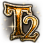
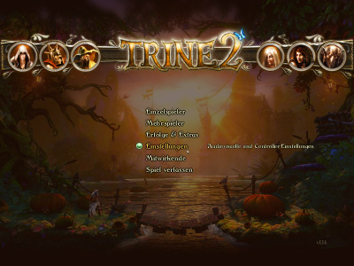
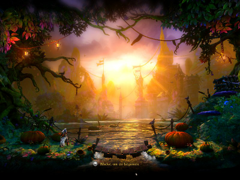
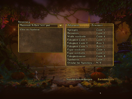
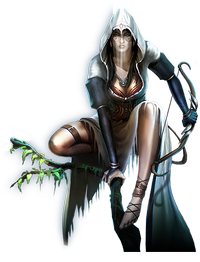

Trine 2
Dieser Artikel wurde für die folgenden Ubuntu-Versionen getestet:
Ubuntu 14.04 Trusty Tahr
Zum Verständnis dieses Artikels sind folgende Seiten hilfreich:

Trine 2  ist der kommerzielle Nachfolger des Action-Puzzle-Plattformers Trine. Die drei Helden Zoya, Amadeus und Pontius konnten sich im ersten Teil von Trine befreien. Dieses ist wieder zurückgekehrt, da die Wälder des Königreiches mit einem Fluch belegt worden sind. Der Ritter, der Zauberer und die Diebin sollen die Ordnung wieder herstellen und kämpfen für das Gute. Durch geschickte Kombination ihrer Fähigkeiten gelingt es dem Spieler die Rätsel zu lösen...
ist der kommerzielle Nachfolger des Action-Puzzle-Plattformers Trine. Die drei Helden Zoya, Amadeus und Pontius konnten sich im ersten Teil von Trine befreien. Dieses ist wieder zurückgekehrt, da die Wälder des Königreiches mit einem Fluch belegt worden sind. Der Ritter, der Zauberer und die Diebin sollen die Ordnung wieder herstellen und kämpfen für das Gute. Durch geschickte Kombination ihrer Fähigkeiten gelingt es dem Spieler die Rätsel zu lösen...
Neben der Standard Edition kann eine Collector's Edition erworben werden, welche ein Digitales Artbook und den Soundtrack des Komponisten Ari Pulkkinen im .MP3-Format beinhaltet.
|  |  |
| Hauptmenü | Spielszene |
Installation¶
Entwicklerseite¶
Nach dem Kauf des Spiels auf Trine 2 bekommt man den Link zum Humble Store per Email zugeschickt. Nachdem man die Seite geöffnet hat kann das Spiel (trine2_linux_installer.run) heruntergeladen werden. Anschließend wird der Installer ausführbar gemacht [1] und die Installation eingeleitet [2]:
./trine2_linux_installer.run
Übergibt man dem Befehl das Kommando --help erhält man einen Überblick über weitere Optionen.
Hinweis:
Im Humble Store findet man zur Verwendung von Desura den entsprechenden Key.
32-Bit-Architektur¶
Benutzer einer 32-Bit-Version von Ubuntu installieren [3] folgende Paket:
libdirectfb-1.2-9
libopenal1
 mit apturl
mit apturl
Paketliste zum Kopieren:
sudo apt-get install libdirectfb-1.2-9 libopenal1
sudo aptitude install libdirectfb-1.2-9 libopenal1
64-Bit-Architektur¶
Zunächst müssen unter einer 64-Bit-Version von Ubuntu folgende Pakete installiert [3] werden:
libatk1.0-0:i386 (32-Bit-Paket)
libc6:i386 (32-Bit-Paket)
libcairo2:i386 (32-Bit-Paket)
libdirectfb-1.2-9:i386 (32-Bit-Paket)
libdrm2:i386 (32-Bit-Paket)
libexpat1:i386 (32-Bit-Paket)
libfontconfig1:i386 (32-Bit-Paket)
libfreetype6:i386 (32-Bit-Paket)
libgcc1:i386 (32-Bit-Paket)
libgdk-pixbuf2.0-0:i386 (32-Bit-Paket)
libglib2.0-0:i386 (32-Bit-Paket)
libglu1-mesa:i386 (32-Bit-Paket)
libgtk2.0-0:i386 (32-Bit-Paket)
libice6:i386 (32-Bit-Paket)
libogg0:i386 (32-Bit-Paket)
libopenal1:i386 (32-Bit-Paket)
libpango1.0-0:i386 (32-Bit-Paket)
libpcre3:i386 (32-Bit-Paket)
libpixman-1-0:i386 (32-Bit-Paket)
libpng12-0:i386 (32-Bit-Paket)
libportaudio2:i386 (32-Bit-Paket)
libselinux1:i386 (32-Bit-Paket)
libsm6:i386 (32-Bit-Paket)
libstdc++6:i386 (32-Bit-Paket)
libuuid1:i386 (32-Bit-Paket)
libvorbis0a:i386 (32-Bit-Paket)
libvorbisfile3:i386 (32-Bit-Paket)
libx11-6:i386 (32-Bit-Paket)
libxau6:i386 (32-Bit-Paket)
libxcb1:i386 (32-Bit-Paket)
libxcb-render-util0:i386 (32-Bit-Paket)
libxcomposite1:i386 (32-Bit-Paket)
libxcursor1:i386 (32-Bit-Paket)
libxdamage1:i386 (32-Bit-Paket)
libxdmcp6:i386 (32-Bit-Paket)
libxext6:i386 (32-Bit-Paket)
libxfixes3:i386 (32-Bit-Paket)
libxi6:i386 (32-Bit-Paket)
libxinerama1:i386 (32-Bit-Paket)
libxrandr2:i386 (32-Bit-Paket)
libxrender1:i386 (32-Bit-Paket)
libxxf86vm1:i386 (32-Bit-Paket)
zlib1g:i386 (32-Bit-Paket)
mit apturl
Paketliste zum Kopieren:
sudo apt-get install libatk1.0-0:i386 libc6:i386 libcairo2:i386 libdirectfb-1.2-9:i386 libdrm2:i386 libexpat1:i386 libfontconfig1:i386 libfreetype6:i386 libgcc1:i386 libgdk-pixbuf2.0-0:i386 libglib2.0-0:i386 libglu1-mesa:i386 libgtk2.0-0:i386 libice6:i386 libogg0:i386 libopenal1:i386 libpango1.0-0:i386 libpcre3:i386 libpixman-1-0:i386 libpng12-0:i386 libportaudio2:i386 libselinux1:i386 libsm6:i386 libstdc++6:i386 libuuid1:i386 libvorbis0a:i386 libvorbisfile3:i386 libx11-6:i386 libxau6:i386 libxcb1:i386 libxcb-render-util0:i386 libxcomposite1:i386 libxcursor1:i386 libxdamage1:i386 libxdmcp6:i386 libxext6:i386 libxfixes3:i386 libxi6:i386 libxinerama1:i386 libxrandr2:i386 libxrender1:i386 libxxf86vm1:i386 zlib1g:i386
sudo aptitude install libatk1.0-0:i386 libc6:i386 libcairo2:i386 libdirectfb-1.2-9:i386 libdrm2:i386 libexpat1:i386 libfontconfig1:i386 libfreetype6:i386 libgcc1:i386 libgdk-pixbuf2.0-0:i386 libglib2.0-0:i386 libglu1-mesa:i386 libgtk2.0-0:i386 libice6:i386 libogg0:i386 libopenal1:i386 libpango1.0-0:i386 libpcre3:i386 libpixman-1-0:i386 libpng12-0:i386 libportaudio2:i386 libselinux1:i386 libsm6:i386 libstdc++6:i386 libuuid1:i386 libvorbis0a:i386 libvorbisfile3:i386 libx11-6:i386 libxau6:i386 libxcb1:i386 libxcb-render-util0:i386 libxcomposite1:i386 libxcursor1:i386 libxdamage1:i386 libxdmcp6:i386 libxext6:i386 libxfixes3:i386 libxi6:i386 libxinerama1:i386 libxrandr2:i386 libxrender1:i386 libxxf86vm1:i386 zlib1g:i386
Ab Ubuntu 14.04 und jüngeren Versionen installiert man ein zusätzliches Paket:
libpangocairo-1.0-0:i386 (32-Bit-Paket)
mit apturl
Paketliste zum Kopieren:
sudo apt-get install libpangocairo-1.0-0:i386
sudo aptitude install libpangocairo-1.0-0:i386
Außerdem wird eine passende 32-Bit-Version von libgl1-mesa-glx benötigt. Benutzer von LTS-Versionen haben möglicherweise ein LTS Enablement Stack installiert und müssen daher auch die dazu passende Version von libgl1-mesa-glx wählen. Die folgenden Terminalbefehle [2] installieren die richtige Version:
pkg=$(dpkg-query -l libgl1-mesa-glx | grep -m1 ^ii[[:space:]]* | grep -o libgl1-mesa-glx[[:graph:]]* | sed -r s/:\(i386\|amd64\)/""/g) sudo apt-get install $pkg:i386
Wer kein LTS Enablement Stack installiert hat, wählt bedenkenlos das folgende Paket:
libgl1-mesa-glx:i386 (32-Bit-Paket)
mit apturl
Paketliste zum Kopieren:
sudo apt-get install libgl1-mesa-glx:i386
sudo aptitude install libgl1-mesa-glx:i386
Desura¶
Das Spiel kann über die Internetseite oder den Client zur Spieleliste hinzugefügt und gestartet werden [4].
Nach erfolgreicher Installation kann das Spiel über "Anwendungen -> Spiele -> Trine 2" gestartet werden. Nach dem ersten Start wird die Konfiguration im Homeverzeichnis unter ~/.frozenbyte/Trine2/ abgespeichert. Hier werden auch Spielstände hinterlegt. Die Charaktere können wahlweise mit Maus und Tastatur oder mit einem Controller gesteuert werden.
Konfiguration¶
Über Esc gelangt man in das Hauptmenü. Unter "Einstellungen" können die Spracheinstellungen, die Tastaturbelegung, Helligkeitseinstellungen et cetera angepaßt werden.
|  |
| Konfiguration |
Problemlösungen¶
Speicherstand in Steam importieren¶
Um den Speicherstand (inklusive aller freigeschalteten Erfolge und Geheimnisse) vom zuvor manuell oder mittels Desura installiertem Trine 2 in die native Linux-Version von Steam zu importieren, startet man als erstes Steam (Trine 2 ist natürlich schon installiert). Anschließend muss man die Dateien achieve.fbs (enthält die freigeschalteten Erfolge), options.fbs (enthält die freigeschalteten Geheimnisse) und den eigentlichen Speicherstand (z.B. slot1.fbs) aus dem versteckten Ordner ~/.frozenbyte/Trine2/ in den Ordner ~/Steam/userdata/LANGE_ZAHLENKOMBINATION/35720/remote/ kopieren. Nach dem Kopieren nennt man die Dateien entsprechend der aktuellen Version von Trine 2 um (z.B. 1.19, welche man bei gestartetem Trine 2 unten rechts im Hauptmenü ablesen kann):
achieve.fbs nach achieve_v119 umbenennen
options.fbs nach options_v119 umbenennen
slot1.fbs nach slot1_v119 umbenennen
Anschließend muss Steam geschlossen werden. Jetzt werden die hinzugefügten Dateien synchronisiert und nach erneutem Starten von Steam bzw. dem direkten starten von Trine 2 über die z.B. angelegte Desktop-Verknüpfung steht der Speicherstand auch in der Steam-Version von Trine 2 zur Verfügung und man kann problemlos weiter spielen und seine freigeschalteten Errungenschaften mit der Steam-Community teilen.
Spielstart¶
Sofern das Spiel nach einer Modifikation nicht mehr starten sollte kann es durch Löschen der Datei options.txt im Ordner ~/.frozenbyte/Trine2/ wieder auf die Grundwerte zurückgesetzt werden.
Nach der Installation durch Steam oder einem Steam Update kann es sein, dass die Ausführrechte im Steam Ordner verloren gehen. Abhilfe schafft manuelles Setzen der Rechte.
Spielstart 64-Bit¶
Es kann sein, dass das Spiel beim Start durch Steam die Libraries nicht findet. Abhilfe schafft manuelles Starten von Trine mit Angabe der 32-Bit libs
cd ~/SteamVerzeichnis/SteamApps/common/Trine 2 LD_LIBRARY_PATH="./lib/lib32:$LD_LIBRARY_PATH" ./bin/trine2_linux_32bit
Das Spiel startet dann ohne Steamunterstützung. Nach dem Beenden läßt sich das Spiel auch über Steam starten.
Tastenkürzel¶
| Tastenkürzel | |
| Taste(n) | Funktion |
| Esc / ⏎ | Menü |
| Alt + ⏎ | Vollbid- / Fenstermodus |
| Alt + F4 | Spiel beenden |
| F11 | Bildschirmfoto erstellen. Diese werden im Homeverzeichnis unter ~/.frozenbyte/trine2/screenshots abgelegt. |

Infobox¶
| Trine 2 | |
| Originaltitel: | Trine 2 |
| Genre: | Puzzle |
| Sprache: |       |
| Veröffentlichung: | 2012 |
| Publisher: | Humble Bundle |
| minimale Systemvoraussetzungen: | 2 GHz CPU / 1 GB RAM / Radeon HD 2800 oder GeForce 6800 Grafikkarte (proprietärer Treiber) / 1,7 GB Festplattenspeicher |
| Medien: | Download |
| Strichcode / EAN / GTIN: | - |
| Läuft mit: | nativ |

- Erstellt mit Inyoka
-
 2004 – 2017 ubuntuusers.de • Einige Rechte vorbehalten
2004 – 2017 ubuntuusers.de • Einige Rechte vorbehalten
Lizenz • Kontakt • Datenschutz • Impressum • Serverstatus -
Serverhousing gespendet von